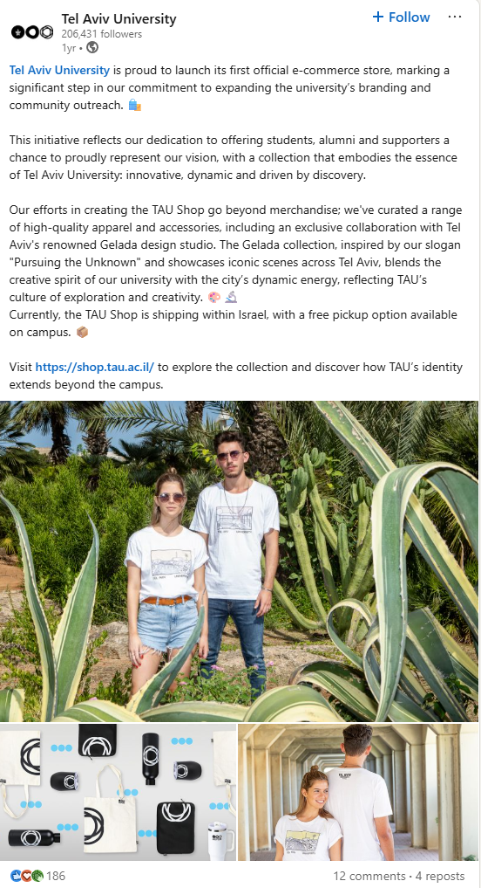

Feature No. 02 — Brand & Commerce
Building a shop from scratch
The Official Tel Aviv University e-commerce website.
- Role
- Founding operator. Brand call, vendor sourcing, design-team PM, dev-agency coordination, logistics, launch & social.
- Scope
- Positioning, vendor sourcing, design-team PM, dev-agency coordination, shipping pipeline, launch campaign, and post-launch social across Facebook, LinkedIn & Instagram.
- Live at
- shop.tau.ac.il

I never thought I’d end up managing a shop in my position, but that’s exactly what shows you how far creativity in marketing can carry you. When I started working at TAU, our team had a vision: every university they looked up to had a proper shop, and we didn’t. They thought I was the person to handle it: manage the project, build the website, develop products and introduce it to the world. I’d never worked in e-commerce before, never sat across from a development agency, never stood on a factory floor watching a first sample come off the press. I was happy to take it on. Then first thing I wanted to figure out was the why: what would it mean to have a shop that actually feels like TAU? I had an answer.
Tel Aviv University has a distinct voice, and making the shop feel truly TAU meant understanding every audience it speaks to — students on campus, alumni who left twenty years ago, donors and partners watching from abroad. My brief to myself, after looking at every other Israeli university shop, was one line: not your regular merch store. TAU is elevated and it’s Tel Avivian, and the shop had to feel like both.
Not your regular merch store
I planned the shop, project-managed the design team on identity and naming, briefed the vendors, sat across from the Shopify dev agency, went to the factory to see the first shirts come off the press, wrote the launch plan, and guided the content team on the reels and posts that introduced it. The shop is my baby. What mattered, through all of it, was the one line: every decision had to defend itself against not your regular merch store, or it didn’t ship.
At first, we split the store into two collections. Essentials — the hoodie, tote, mug, laptop case — for the audience that wants a well-made version of the familiar thing. And TAU X GELADA, a collaboration with the Tel Avivian art studio: a capsule of t-shirts named after places on and around campus — Yarkon, HaBima, Gordon Beach, Sourasky. The logic was editorial, not commercial. A student buying a Gordon Beach tee isn’t buying a souvenir of their university; they’re buying a piece of the neighbourhood the university lives in. After launch, we got messages comparing the shop to Harvard, NYU, the Ivy League stores — which is exactly the bar I set for myself, and I’m proud we hit it.
TAU X GELADA
-

Yarkon T-Shirt
TAU X GELADA · 75 NIS
-

Gordon Beach Tee
TAU X GELADA · 75 NIS
-

HaBima Tee
TAU X GELADA · 75 NIS
-

Sourasky Tee
TAU X GELADA · 75 NIS
The essentials
-

TAU Hoodie (Grey)
Essentials · 105 NIS
-

TAU Tote
Essentials · 35 NIS
-

TAU Mug
Essentials · 65 NIS
-

The Laptop Case
Essentials · 75 NIS
Explore more at the shop → shop.tau.ac.il
We got messages comparing the shop to Harvard, NYU, the Ivy League — exactly the bar I set for myself.
After launch: dozens of orders in the first week and a half. We started, as we say in Hebrew, on the right foot — students got product, alumni got nostalgia, partners and donors got the brand story, and every surface spoke in the same voice. A shop that speaks to one audience well is a merch store. A shop that speaks to three in the same voice is a brand.
